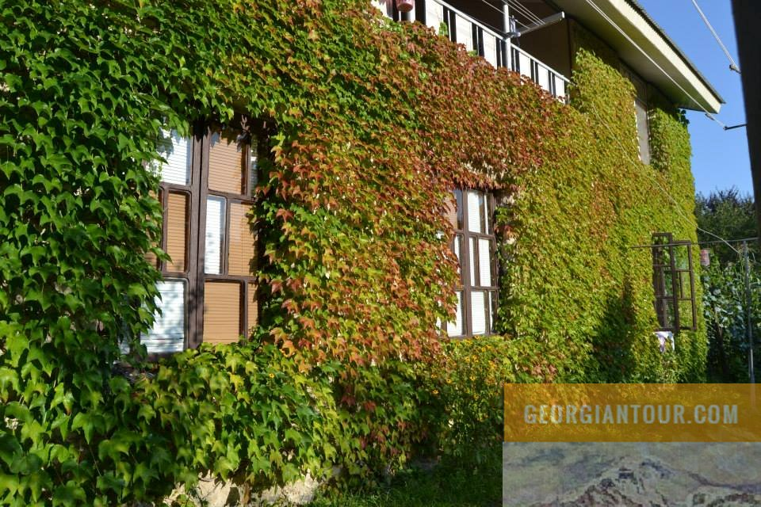

სასტუმრო ოაზისი
სასტუმრო "ოაზისი" მდებარეობს ქალაქ ცაგერში, რომელიც განთქმულია თავისი ვენახებითა და მდიდარი ისტორიით. ეს კომფორტული სასტუმრო იდეალურია მათთვის, ვინც ეძებს კონფიდენციალურობას ან სურს ჩაეფლოს ადგილობრივი მოსახლეობის ტრადიციებსა და კულტურაში. Oasis Hotel გთავაზობთ მყუდრო ოთახებს თანამედროვე კეთილმოწყობით, მათ შორის Wi-Fi, ტელევიზორები და კონდიციონერი. ელეგანტური ინტერიერის სტილი შერწყმულია ადგილობრივ ტრადიციებთან, ქმნის თბილ და მეგობრულ ატმოსფეროს. ოთახების უმეტესობა გთავაზობთ განსაცვიფრებელ ხედებს მიმდებარე ბუნებასა და ქალაქზე. სასტუმროს რესტორანში შეგიძლიათ დააგემოვნოთ ფერმის პროდუქტებისგან მომზადებული ტრადიციული ქართული კერძები. თუ გსურთ დაისვენოთ ერთდღიანი თავგადასავლების შემდეგ, შეგიძლიათ მიირთვათ ადგილობრივი ღვინო სასტუმროს ახალ გარე ტერასაზე ან ბარში. სასტუმრო "ოაზისი" გთავაზობთ მომსახურების ფართო სპექტრს აქტიური და კულტურული დასვენებისთვის. შესაძლებელია ტურების მოწყობა ადგილობრივ ღირსშესანიშნაობებში, მათ შორის ღვინის ქარხნებში, ისტორიულ ადგილებში და ბუნებრივ სილამაზეზე. "ოაზისი" შესანიშნავი ადგილია მათთვის, ვინც ეძებს ხარისხიან დასვენებას, საკვებს და უნიკალურ მოგზაურობას ქართული კულტურის გულში.

მერია
რუსთაველის ქუჩა N 58
(+995) 599 18 24 25
tsagerimeria@gmail.com
საკრებულო
რუსთაველის ქუჩა N 69
(+995) 551 17 97 41
tsagerisakrebulo@gmail.com